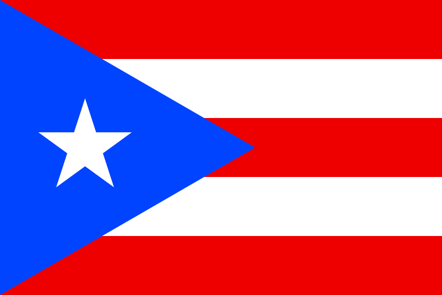

Established in 1521 old San Juan is the oldest city. In old San Juan it holds over five centries of history. The building material used to build structures in the 16th century, including forts, is called mortar and consists of limestone, sea sand, and brick.
The beaches in Puerto Rico are nearly 300 miles of endless beach to explore. There are offically over 248 beaches in Puerto Rico with all of the beaches are open to the public to explore. The beaches will have the most clear and blue water you will ever see.
El Yunque National Forest is the only rainforest in the United States tropical rainforest in the United States National Forest System. Home to over 240 tree species (with 23 species found nowhere else on Earth), 50 fern varieties, and dozens of orchid types.
